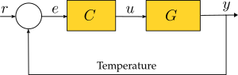
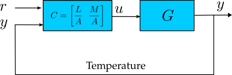

- set_controller(system, controller)
Programs a controller for the thermal system.
The controller is defined as a transfer function in the Laplace Transform Domain \(s\).
This function allows the user to program a standard 1-DOF controller, as shown in the next figure:
A 2-DOF controller, as shown below, can also be programmed using this function.
- Parameters:
system (ThermalSystemIoT) – The IoT thermal system to which the controller will be programmed.
controller (TransferFunction) – A continuous-time transfer function object (ct.tf) in the Laplace Transform Domain \(s\).
- Returns:
Returns True if the controller parameters are successfully updated.
- Return type:
bool
Notes
This function supports both 1-DOF and 2-DOF controllers.
The controller is converted to state-space form for digital implementation. It is discretized using the bilinear transform with a sampling time of 0.8 seconds, which is suitable for this system.
An observer-based anti-windup scheme is implemented using the LQR method.
Examples
Example 1: Programming a 1-DOF Controller
First, import the required packages unthermal and control.
>>> import control as ct # Importing control systems package >>> import unthermal as ter # Importing thermal system package
Define the Laplace variable s and the thermal system:
>>> s = ct.TransferFunction.s # Defining Laplace variable >>> my_system = ter.ThermalSystemIoT(plant_number="XXXX", broker_address="192.168.1.100") # defining the thermal system
Now, suppose we want to program the following controller:
\(C(s) = \dfrac{2s^2 + s + 1}{s(s+2)}\)
We define and upload the controller as follows:
>>> C = (2*s**2 + s + 1) / (s * (s + 2)) # Defining the controller as a transfer function object >>> ter.set_controller(my_system, C) # uploading controller
Alternatively, we can upload the controller using the numerator and denominator coefficients:
>>> num = [2, 1, 1] # defining numerator as a list >>> den = [1, 2, 0] # defining denominator as a list >>> C = ct.tf(num, den) # # Defining the controller as a transfer function object >>> ter.set_controller(my_system, C) # uploading controller
Example 2: Programming a 2-DOF Controller
Suppose we want to program the following 2-DOF controller:
\(C(s) = \left[\dfrac{L}{A} \,\,\, \dfrac{M}{A}\right] = \left[\dfrac{2s + 1}{s^2 + 2s + 1} \,\,\, \dfrac{-6s - 5}{s^2 + 2s + 1}\right]\)
We define and program the controller as follows:
>>> num = [[2, 1], [-6, -5]] # Numerator lists for L and M >>> den = [[1, 2, 1], [1, 2, 1]] # List of denominators, where A is repeated for each transfer function entry >>> C = ct.tf(num, den) # Defining the controller as a transfer function matrix >>> ter.set_controller(my_system, C) # Uploading the controller
{kind=link}
{kind=link}